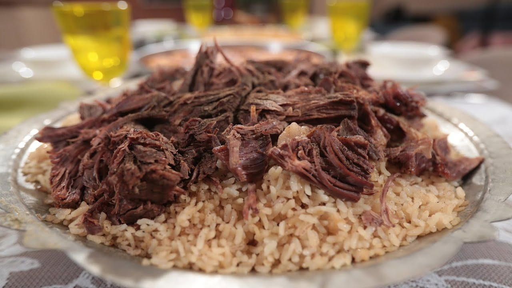
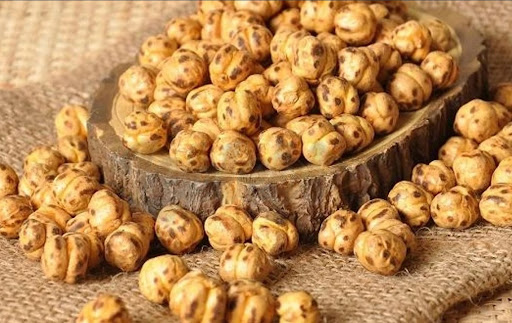

Çorum Mutfak Kültürü
Anadolu'nun Tahıl Ambarı
Çorum, hem tarihsel zenginliğiyle hem de leblebisi ve et yemekleriyle öne çıkan bir Anadolu şehridir.
İskilip dolmasından hingele, leblebiden helvaya kadar çok çeşitli lezzetler sunar.
- Geleneksel dolmalar
- Leblebi ve tatlılar
- Katkısız yöresel ürünler
- Yöreye özgü mantılar
Öne Çıkan Yemekler ve Mekan Önerileri

İskilip Dolması
Et ve pirinç uzun sürede, bakır kazanlarda pışpışirilerek servis edilir.
Nerede Yenir?
- 📍 İskilip Lokantası
- 📍 Yöresel Sofra Çorum
- 📍 Çorum Sofrası

Çorum Leblebisi
Farklı çeşitleriyle ülke çapında bilinen atıştırmalık.
Nereden Alınır?
- 📍 Leblebici Hacı Mustafa
- 📍 Tarihi Leblebiciler Çarşısı
- 📍 Çorum Gurme

Hingel
Çorum usulü mantı. Sarımsaklı yoğurt ve tereyağlı sosla sunulur.
Nerede Yenir?
- 📍 Mantıcı Ahmet Usta
- 📍 Çorum Ev Yemekleri
- 📍 Lezzet Sofrası